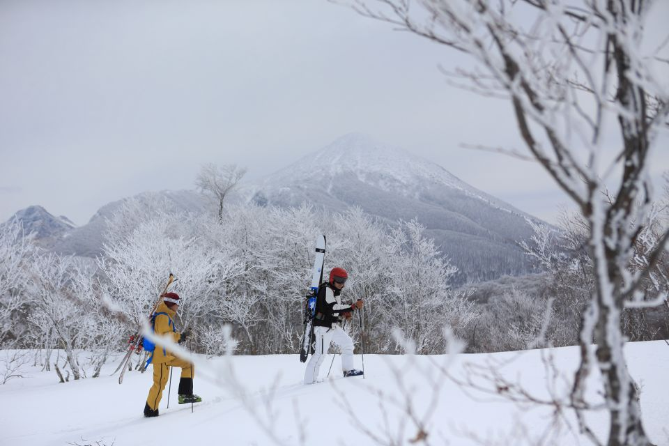
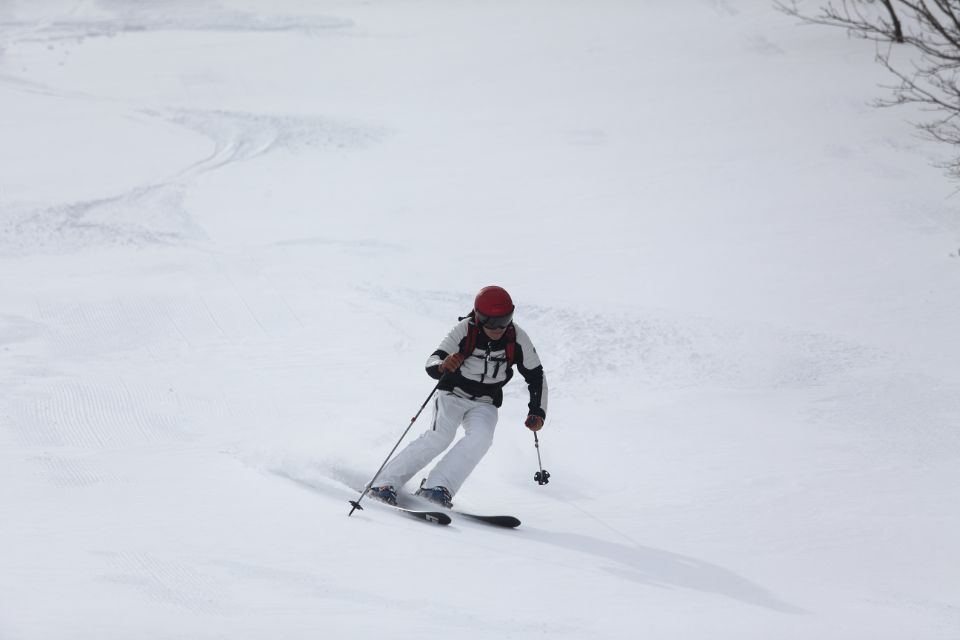
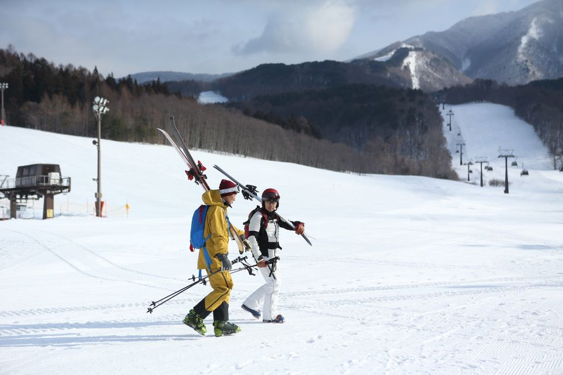
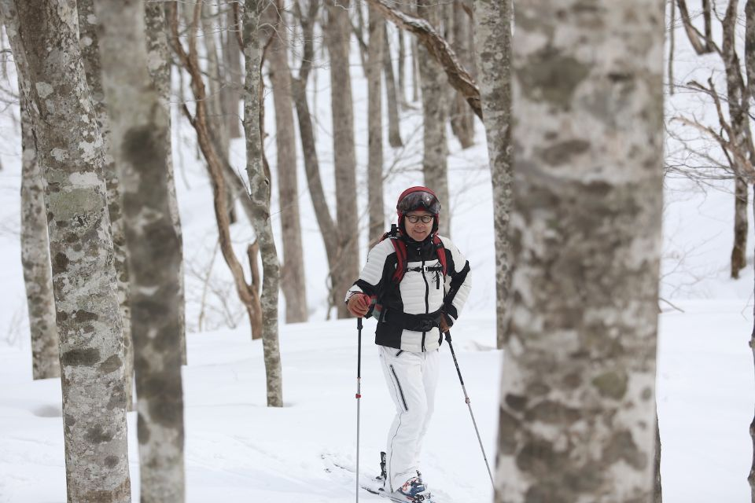
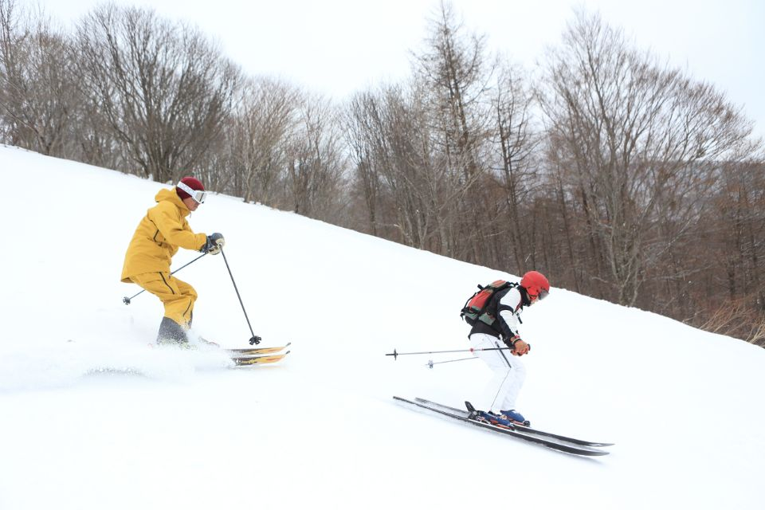
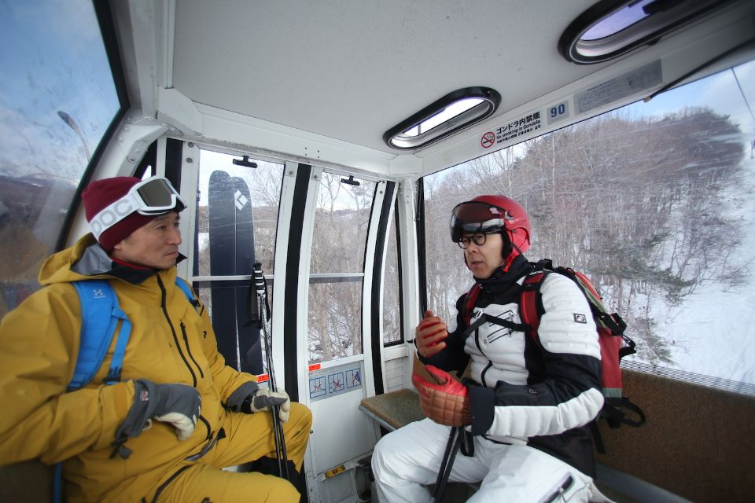
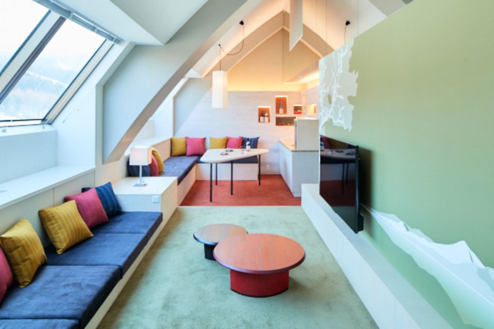

Префектура Фукусима · гора Бандай · горные лыжи
Лыжи у горы Бандай: буковый лес, пухляк и вкус Айдзу

У подножия горы Бандай, рядом с озером Инавасиро, лежат склоны, по которым можно не только кататься. Глава компании Hoshino Resorts, сам заядлый лыжник, провёл по ним гостя и показал, почему лыжи здесь становятся путешествием.
Гид
Лыжник, который управляет курортом

Из белой дали, поднимая за собой облако снежной пыли, спускается одинокий лыжник в белом костюме и красном шлеме. За ним по склону тянется ровная дуга следа. Это глава компании Hoshino Resorts, которая управляет здешними склонами. Он снимает очки и сразу берёт дело в свои руки.
«Добро пожаловать! Сегодня покажу вам всё как следует»
глава Hoshino Resorts
С этими словами он закидывает лыжи на плечо и быстрым шагом ведёт за собой гостей. Дело было в конце февраля 2019 года на курорте Alts Bandai в префектуре Фукусима, у самого озера Инавасиро, у подножия горы Бандай. Многие японские курорты страдают от нехватки снега, но здесь об этом не было и речи: условия стояли отличные.
Глава компании проводит на лыжах не меньше 60 дней в году. Зимой его база на Хоккайдо, нередко он уезжает кататься в Европу, а летом из Новой Зеландии отправляется на хели-ски и в бэккантри. В тот день он показывал новый маршрут, который сам продвигал, гостю под стать себе: журналисту, который с детства на лыжах, увлекается могулом и бэккантри и называет себя помешанным на пухляке.
Маршрут
Пешком через буковый лес

Alts Bandai в 2019 году был серьёзным курортом: 25 трасс, семь подъёмников и гондола, здесь проходили и международные соревнования. С вершины, куда поднимает подъёмник, открывается вид сразу на гору Бандай и озеро Инавасиро.
Казалось бы, самое время спускаться. Но глава компании первым делом ведёт гостей дальше, в буковый лес.
«Если пройти через лес около 800 метров, попадёшь на курорт „Нэкома“ на стороне Ура-Бандай. Над маршрутом, который связал бы его с Alts Bandai, мы много лет работали вместе с властями»
глава Hoshino Resorts
Эти места входят в национальный парк Бандай-Асахи и относятся к особо охраняемой зоне. На оба курорта и раньше действовал общий ски-пасс, но чтобы перебраться с одного на другой, приходилось спускаться к подножию и ехать около часа на машине. Пеший маршрут по снегу, открытие которого было назначено на середину января 2020 года, сокращал путь до 15 минут ходьбы. Особого снаряжения вроде камусов для него не нужно, лыжи вполне можно нести на плече.


В декабре 2023 года между курортами пустили соединительный подъёмник «Ньяруцу», и оба склона объединили под новым названием Hoshino Resorts NEKOMA Mountain: бывший Alts Bandai стал Южной зоной, бывший «Нэкома» Северной. Сезон 2026/27 годов назначен с 28 ноября 2026 года по 9 мая 2027 года.
Разговор
Лыжи как путешествие
После прогулки гость делится впечатлениями.
«Идёшь по буковому лесу, замечаешь, как меняются деревья, находишь следы зверей. А дальше великолепный пухляк! Это было настоящее путешествие»
журналист
Глава компании рассказывает, что хочет со временем сделать из этого маршрута основу для экскурсий по записи. Новые пути он прокладывает сам: только маршрут до «Нэкомы» за ту неделю прошёл четыре раза. С вершины подъёмника можно спуститься и в другую сторону, к озеру Огуни-нума.
«Мало кто об этом знает, но зимнее озеро удивительно красиво. От Огуни-нумы можно подняться на гору Огуни-яма, а за ней есть онсэн. Это не наше заведение, но можно попросить отель прислать машину, и, пока сидишь в горячей воде, за тобой как раз приедут»
глава Hoshino Resorts
Пообедать по дороге, выбраться за пределы курорта и закончить день в онсэне: гость называет это идеальным туром и замечает, что такой подход близок к тому, как катаются в Европе. В 2019 году это был лишь замысел.

По словам главы компании, поездка на Alts Bandai для него не обходится без лапши соба в закусочной на станции Корияма, где едят стоя. А гостей он всегда водит в ресторан «Такино» в Айдзу-Вакамацу: он стоит в перенесённом сюда здании периода Эдо, и там подают «ваппа-мэси», традиционное блюдо Айдзу в деревянной коробочке.
«Когда лыжи соединяются с путешествием, люди ищут не только пухляк и природу, но и Японию, характер самого края. Пока мы работаем в основном над впечатлениями, а дальше главный вопрос в том, как сделать по-японски и сами курорты»
глава Hoshino Resorts
Здешний снег, по его словам, хорош и по мировым меркам, и выпадает его достаточно, так что у этих мест ещё много возможностей.
Hoshino Resorts NEKOMA Mountain, Южная зона (бывший Alts Bandai)
- Адрес
- префектура Фукусима, уезд Яма, Бандай, Сарасина, Симидзудайра, 6838-68
- Телефон
- +81 242-74-5000
- Даты
- в сезон 2019/20 годов с 21 декабря по 29 марта
- Сайт
- nekoma.co.jp
Hoshino Resorts NEKOMA Mountain, Северная зона (бывший «Нэкома»)
- Адрес
- префектура Фукусима, уезд Яма, Китасиобара, Хибара, Нэкомаяма, 1163
- Телефон
- +81 241-32-3001
- Даты
- в сезон 2019/20 годов с 30 ноября по 6 мая
- Сайт
- nekoma.co.jp
Отель
Bandaisan Onsen Hotel: Айдзу на каждом шагу
Отель стоит прямо у склонов, и о крае здесь напоминает многое. У входа гостей встречает акабэко, красная бычья игрушка Айдзу. На завтрак подают «кодзую», местный суп, а по вечерам проходят лекции о японском сакэ.
Буфет ресторана kisse kisse строится на традиционной кухне Айдзу: здесь есть «ваппа-мэси», «кодзую» и даже темпура из сладких булочек мандзю. Подбор местного сакэ тоже большой, так что за ужином можно познакомиться с кухней края. Номера самые разные, от двухместных до сюитов.

Bandaisan Onsen Hotel
- Адрес
- префектура Фукусима, уезд Яма, Бандай, Сарасина, Симидзудайра, 6838-68
- Телефон
- 0570-073-022 (9:00–20:00)
- Цены / Вход
- от 16 500 иен с завтраком и ужином, без платы за обслуживание (2019 год)
- Заезд / выезд
- заезд с 15:00 (зимой с 16:00), выезд до 11:00 (зимой до 13:00)
- Сайт
- bandaisan.co.jp
Фото: Ёити Ватанабэ.